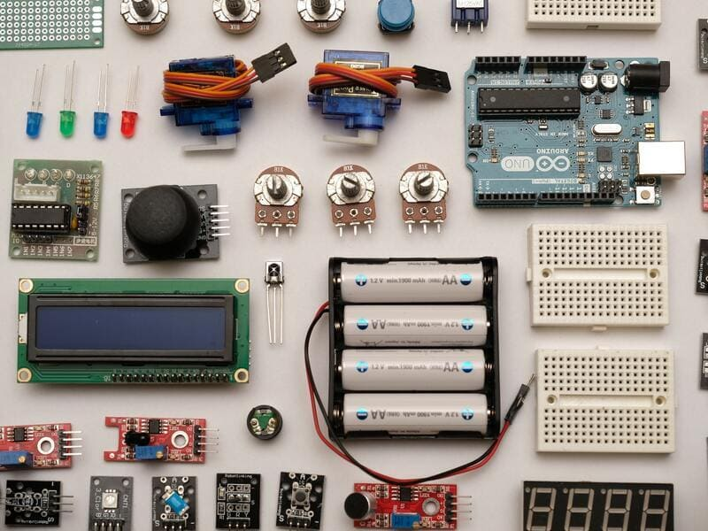

200 Electronic Components Encyclopedia (2022)
GPS: GPS (Global Positioning System) is used to monitor the position of a device. It's basically a surface-mount chip that processes signals from GPS satellites using a small antenna.
Magnetometer: Magnetometers are used to sense the Earth's magnetic field. They are found in many handheld devices such as digital compasses, cameras, and smartphones.
Object Presence Sensor: Object presence sensors are used to detect if an object is within a preset range, but it does not measure distance. These sensors are mostly optical or magnetic.
Passive Infrared Sensor: